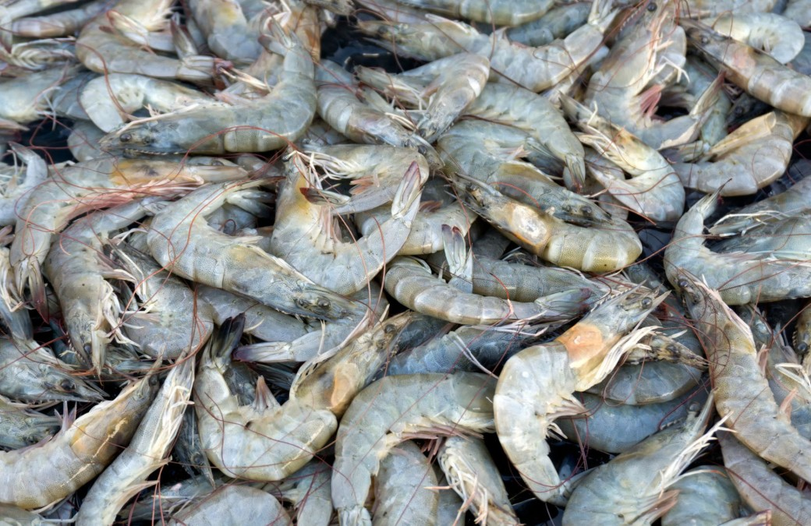
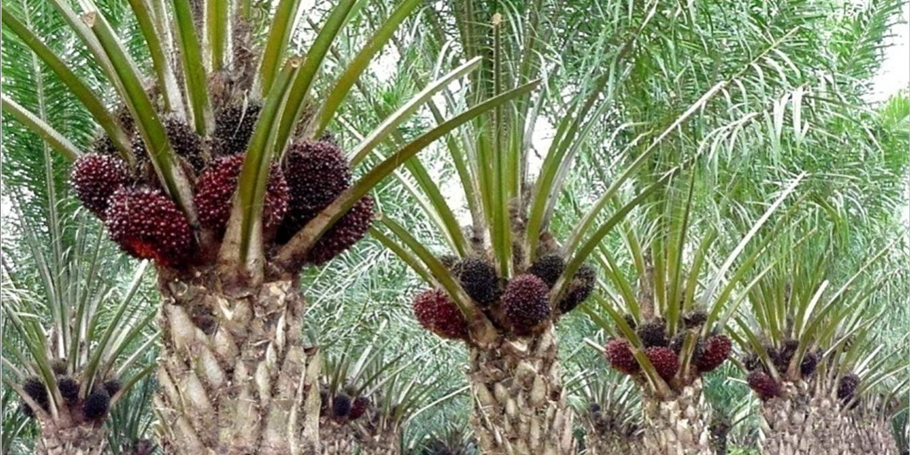
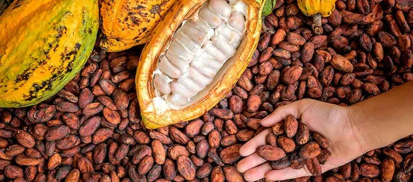

4 Komoditas Unggulan Indonesia
- Udang

Indonesia merupakan negara maritime dengan laut yang luas. Sehingga tidak aneh jika hasil laut seperti udang
merupakan komoditas unggulan yang diekspor hampir ke seluruh Asia, Australia, Amerika, dan Eropa. Dilansir dari
Statista, pada tahun 2019 saja Indonesia mengekspor 207,7 ribu metrik ton udang.
- Kopi

Inonesia dengan iklim tropis yang sangat cocok untuk budidaya kopi, menjadikannya salah satu dari lima negara
terbesar penghasil kopi di dunia. Kopi yang diekspor ke seluruh dunia berupa kopi robusta, arabika, dan kopi luwak.
- Minyak Kelapa Sawit

Minyak kelapa sawit merupakan komoditas unggulan penghasil devisa terbesar Indonesia dengan tujuan ekspor ke China,
Singapur, India, Jerman, Spanyol, Amerika, Jerman dan beberapa negara lainnya. Dilansir dari Statista, pada tahun 2018
Indonesia mengekspor 29,3 juta ton minyak kelapa sawit, menjadikannya produsen minyak kelapa sawit terbesar di dunia.
- Kakao

Kakao merupakan komoditas unggulan penghasil devisa ketiga terbesar di Indonesia. Kakao adalah buah dari pohon kakao yang
merupakan bahan baku pembuatan coklat. Indonesia mengekspor kakao ke banyak negara seperti Amerika, Kanada, Jerman, Swiss,
Rusia, Singapura, Jepang, dan China.